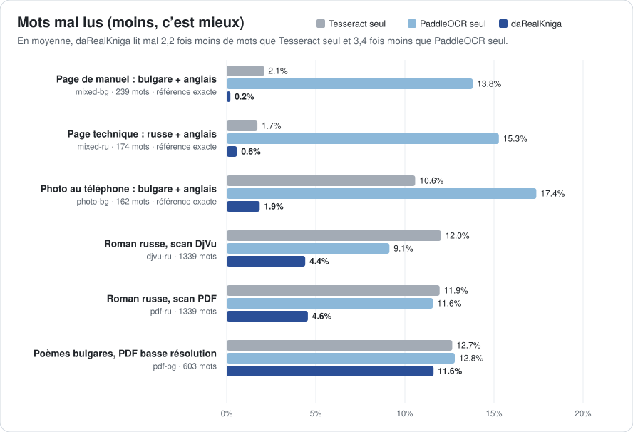

daRealKniga
Transformez livres anciens, archives et documents du quotidien en copies numériques fidèles et interrogeables. Conçu pour les langues slaves et l’anglais, même mélangés sur une même page.
да = oui, книга = livre : « oui, un vrai livre », avec un vrai texte, interrogeable.

Une exécution réelle : une photo au téléphone en entrée, un PDF interrogeable en sortie et, pour comparer, un OCR classique sur la même photo (interface en anglais ; le logiciel existe aussi en français).
Ce qu’il fait
Des PDF interrogeables
Transforme livres DjVu, PDF d’images, photos et scans en PDF où l’on peut chercher, sélectionner et copier le texte. Il écrit aussi un fichier texte brut et, pour les livres DjVu, un DjVu interrogeable.
Cyrillique et latin mélangés
Dans les manuels, dictionnaires et documents bilingues, chaque mot garde son propre alphabet. Les lettres sosies (а/a, р/p, Н/H) ne cassent plus la recherche.
Des photos, pas seulement des scans
Les pages courbées, inclinées ou ombrées photographiées au téléphone sont d’abord redressées et nettoyées, et toutes les pages finissent au même format.
Votre langue, votre ordinateur
L’interface existe en 31 langues, dont toutes les langues slaves. Tout fonctionne sur votre ordinateur : vos documents ne le quittent jamais.
Pour les livres anciens et les archives
daRealKniga est conçu pour numériser des livres entiers et des collections comme le souhaiterait une bibliothèque ou un service d’archives : fidèles à l’original, cohérents et interrogeables.
L’original reste intact
Les scans DjVu gardent leurs images de pages telles quelles ; seule une couche de texte invisible est ajoutée. Un PDF et un fichier texte brut sont écrits à côté.
Des livres entiers, pas seulement des pages
Des centaines de pages sont traitées en parallèle. Un traitement interrompu reprend là où il s’est arrêté, et une plage de pages permet d’essayer les réglages sur quelques pages d’abord.
Impressions anciennes, scans disparates
Toutes les pages finissent au même format, même quand les scans diffèrent. Testé sur des éditions bulgares et russes des années 1970, par rapport à leur texte existant.
Prêt pour le catalogue, et confidentiel
Le titre et l’auteur sont enregistrés dans le PDF. Tout fonctionne sur votre ordinateur : les collections ne le quittent jamais, et les formats sont ouverts (PDF, DjVu, texte brut).
Meilleur qu’un OCR classique
Chaque échantillon est lu de trois façons à partir des mêmes images de pages : par Tesseract seul, par PaddleOCR seul et par daRealKniga, qui nettoie les pages, combine les deux moteurs mot par mot et corrige leurs erreurs.
En moyenne, daRealKniga lit mal 2,2 fois moins de mots que Tesseract seul et 3,4 fois moins que PaddleOCR seul.

| Échantillon | Tesseract seul | PaddleOCR seul | daRealKniga |
|---|---|---|---|
| Page de manuel : bulgare + anglaisscan synthétique d’une page de manuel de langue : du bulgare avec des mots et des phrases en anglais | 97,9 % | 86,2 % | 99,8 % |
| Page technique : russe + anglaisscan synthétique d’une page de mode d’emploi : du russe avec des termes, des commandes et des noms en anglais | 98,3 % | 84,7 % | 99,4 % |
| Photo au téléphone : bulgare + anglaisphoto synthétique d’une page de guide de voyage (courbée, en perspective, éclairage inégal) : du bulgare avec des noms et des expressions en anglais | 89,4 % | 82,6 % | 98,1 % |
| Roman russe, scan DjVumode scan DjVu, prose russe (Vazov, « Sous le joug », 1970) | 88,0 % | 90,9 % | 95,6 % |
| Roman russe, scan PDFPDF de la même édition (scans à plat recadrés) ; référence : la couche texte du DjVu | 88,1 % | 88,4 % | 95,4 % |
| Poèmes bulgares, PDF basse résolutionpoésie et prose bulgares, doubles pages à 133 dpi (Vazov, Œuvres, t. 4, 1974) ; la référence contient elle-même beaucoup d’erreurs d’OCR | 87,3 % | 87,2 % | 88,4 % |
Précision par mot : la part des mots lus exactement. Une lettre latine à la place de son sosie cyrillique compte comme une erreur, car le mot devient introuvable par la recherche.
Mots que l’OCR classique lit mal
| Imprimé | Tesseract seul | PaddleOCR seul | daRealKniga |
|---|---|---|---|
| а | a | – | а ✓ |
| open | ореп | ореn | open ✓ |
| монастырских | мопастырских | мопастырскнх | монастырских ✓ |
| внимание | впимание | вшнмание | внимание ✓ |
| наполняя | паполпяя | паполняя | наполняя ✓ |
| стену | степу | – | стену ✓ |
| них | пих | пих | них ✓ |
| са | ca | са ✓ | са ✓ |
| нов | HOB | нов ✓ | нов ✓ |
| от | OT | от ✓ | от ✓ |
| or | ог | or ✓ | or ✓ |
| да | na | да ✓ | да ✓ |
Les lettres surlignées viennent du mauvais alphabet : identiques à l’écran, elles rendent le mot introuvable.
Mesuré le 2026-10-08 avec daRealKniga 0.3.0, Tesseract 5.3.4 et PaddleOCR 3.7.0. Les trois lisent les mêmes images de pages avec les mêmes modèles d’OCR.
Les échantillons, la notation et la façon de refaire le test vous-même sont décrits dans le README (en anglais).
Télécharger
Gratuit et libre (MIT). Le premier lancement télécharge les modèles d’OCR : environ 45 Mo, plus 10 à 15 Mo par langue.
Linux
Un seul fichier qui contient tout. Rendez-le exécutable et double-cliquez dessus. Fonctionne sur les distributions 64 bits depuis 2022 environ.
Télécharger l’AppImagemacOS en cours
Apple Silicon et Intel. S’installe avec Homebrew et quelques commandes dans le Terminal.
Installer sur macOSWindows en cours
Windows 10 et 11 en 64 bits. S’installe avec quelques commandes PowerShell.
Installer sur WindowsLa prise en charge de macOS et de Windows est récente : si quelque chose ne marche pas ou si les instructions ne sont pas claires, dites-le-nous. Vos retours sont très appréciés.
Utilisation
Ouvrez la fenêtre, déposez-y un document, choisissez la langue du texte et cliquez sur Reconnaître le texte. Ou utilisez la ligne de commande (drk est la forme courte de darealkniga) :
drk make book.djvu --lang bul+eng | Un manuel bulgare avec de l’anglais |
drk make book.pdf --lang bul --title "Под игото" --author "Иван Вазов" | Un livre bulgare, avec le titre et l’auteur enregistrés dans le PDF |
drk make receipt.jpg --lang ukr+eng | Une seule photo : un ticket, une lettre, une note |
drk make phone-photos/ --lang rus | Un dossier de photos de pages, dans l’ordre |